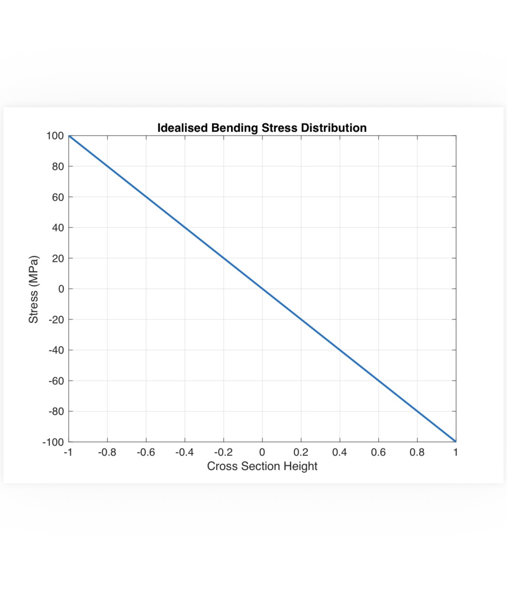
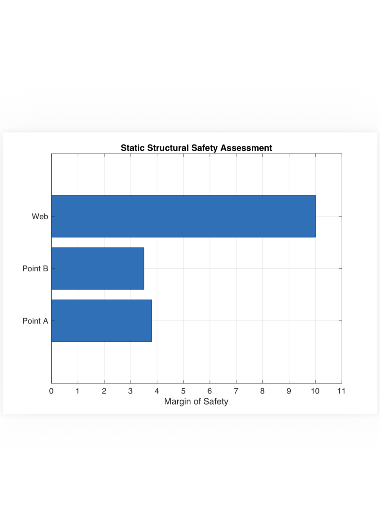
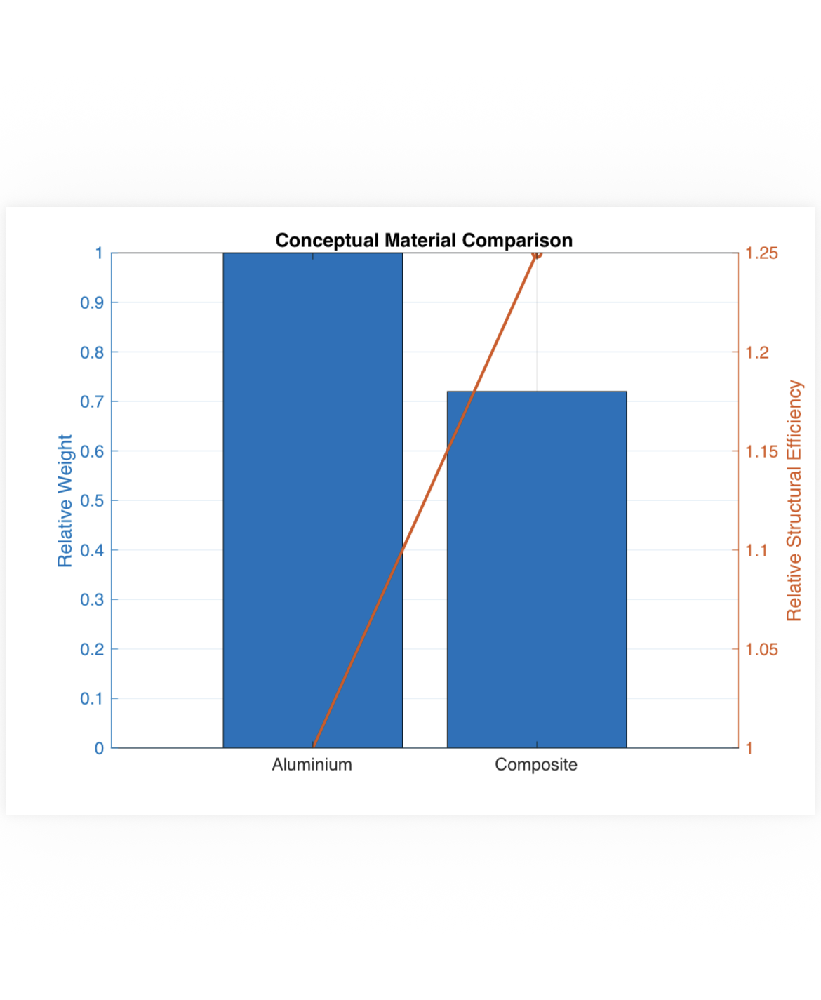
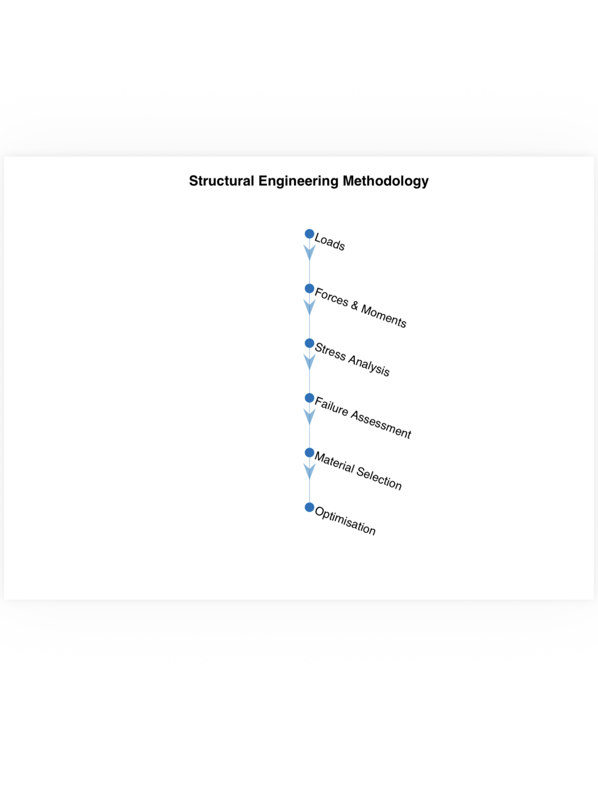

Load Identification
Converting operational loading into distributed and concentrated forces acting on structural components.
Aerospace Structures Studio
Applying static analysis, fatigue assessment, fracture mechanics, material selection and composite redesign to evaluate the structural integrity of an aerospace wing.
This project used the Pilatus PC-9 wing as a case study for developing a structured approach to aerospace structural analysis. The work began by converting aerodynamic loading into forces and moments acting on the wing structure before analysing the resulting bending, shear and torsional stresses.
Static failure, stress concentrations, fracture behaviour and cyclic fatigue were then assessed to determine the structural safety and durability of the existing aluminium wing. The analysis was extended through material selection and mathematical redesign using composite materials.
The central outcome was not limited to analysing one aircraft wing. It developed a repeatable structural engineering methodology that can be applied to aerospace components, mechanical assemblies, trusses, bridges and other load-bearing structures.
Converting operational loading into distributed and concentrated forces acting on structural components.
Resolving shear forces, bending moments and torsional moments through structural load paths.
Evaluating bending, shear, principal and equivalent stresses across critical structural locations.
Comparing calculated stresses with material allowables and determining structural margins of safety.
Assessing cyclic loading, crack growth, safe-life and damage-tolerance requirements.
Balancing strength, stiffness, weight, durability, manufacturability and operational requirements.
Mathematically redesigning an existing metallic structure using modern composite materials.
Improving structural efficiency while retaining appropriate strength, stiffness and safety performance.
Structural analysis begins by defining the loads acting on the system. For the PC-9 wing, an elliptical spanwise lift distribution was used to estimate how aerodynamic loading varied from the wing root to the tip.
The distributed loading was converted into an equivalent concentrated force and its effective position. This allowed the resulting shear forces, bending moments and torsional moments to be calculated at the selected wing section.

The static analysis examined how the wing spar responded to bending, shear and torsional loading. The calculated internal forces were used to determine stresses at critical locations across the spar section.
This developed the ability to move systematically from an external load case to an internal stress state, identify highly loaded regions and assess whether the structure remained within acceptable safety limits.

The linear variation demonstrates how bending creates opposing tensile and compressive stresses across a structural cross-section, with zero normal stress at the neutral axis.

Calculated margins of safety were used to compare structural demand against material capacity and identify the most critical analysed location.
A structure may remain safe under a single static load while still becoming vulnerable under repeated operational loading. The dynamic analysis therefore considered fatigue, safe-life and damage-tolerance principles.
Safe-life analysis estimates how long a component may operate before fatigue becomes critical. Damage-tolerance analysis instead assumes that a defect may already exist and evaluates whether the structure can continue carrying load until the damage is detected and repaired.
Fracture mechanics was applied to compare cracks located near flange holes, within the spar web and along a flange edge. This demonstrated how geometry, stress concentration and crack location influence the critical failure condition.

Material selection was treated as an engineering decision rather than a direct substitution exercise. Strength, stiffness, weight, fatigue resistance, corrosion behaviour, manufacturing requirements and environmental performance all influence whether a material is appropriate for an aerospace structure.
The existing aluminium wing structure was mathematically redesigned using composite material properties. The objective was to achieve an efficient modernisation of the existing aircraft structure while maintaining the required load-bearing performance.
Composite structures introduce directional material behaviour, meaning that fibre orientation and laminate design must correspond to the expected loading directions. The redesign therefore considered multidirectional stress resistance, stiffness and structural weight rather than simply replacing aluminium with carbon fibre.

Although the PC-9 wing provided the case study, the fundamental methodology is transferable to almost any load-bearing structure. The scale and complexity of the structure may change, but the analytical sequence remains consistent.

The same method can define the loading and stress distribution of a cantilevered ledge, shelf, bracket or park-bench component.
Connections, mounts and manufactured components can be analysed by identifying their load paths, moments, stress concentrations and likely failure modes.
Aircraft wings, space structures, bridges and trusses apply the same principles across larger systems containing multiple interacting structural members.
This portfolio page summarises the structural engineering skills developed through the project. The complete technical report is available for readers interested in the detailed assumptions, calculations, fatigue analysis, fracture assessment, composite design and supporting research.